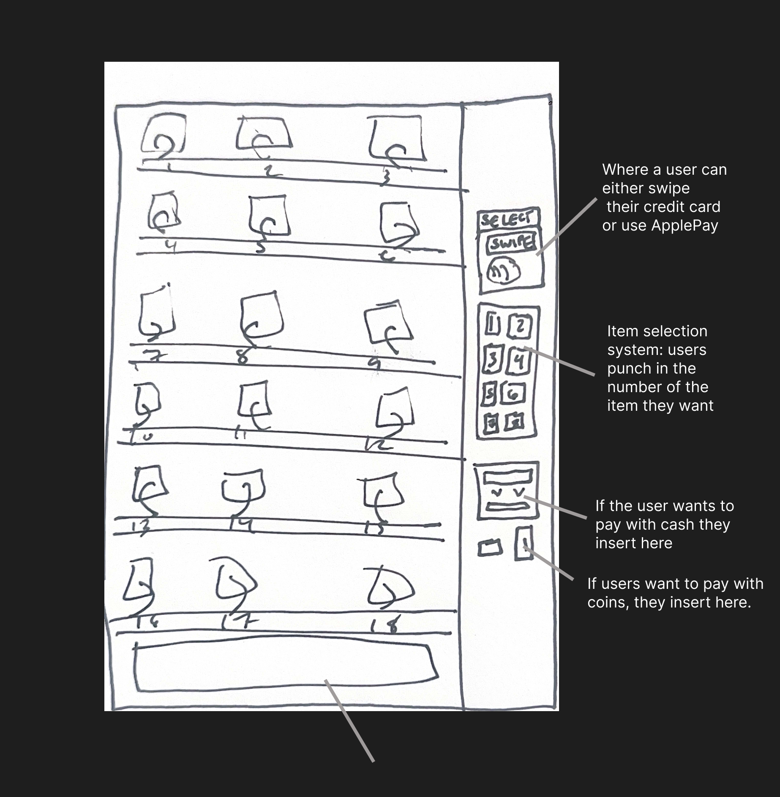

We all have frustrating experiences with public infrastructure. For me and many others, vending machines epitomize the ways in which people’s interactions with interfaces are contingent upon design choices. In this case study, I examined how people interacted with the vending machine in my University’s campus center.
The Interface
This interface attempts to solve the problem of quick and convinient access to food and snacks for users. The vending machine has three main interactive components: the item selection system, th payment system (with one option for credit card/ApplePay and another for cash/coins). The user must first present their ayment method then select their chosen item.
Observations
To get a sense of how people interact and feel about interacting with the vending machine. I observed and interviewed 3 people, representing the different demographics of people I observed using the vending machine.
Person 1: Student
Familiarity with the interface. The student spent around 45 seconds total at the vending machine. They knew exactly which item they wanted from the machine (X) and did not spend a lot of time perusing the options. From how they interacted with the payment system, I could tell that they were very familiar with the interface. They chose to pay via ApplePay.
Person 2: Parent of Perspective Student
This parent spent approximately three minutes interacting with the vending machine. It was clear from my observations that they were unfamiliar with the options available. They spent approximately 1 minute perusing through the options after they settled on X. They then spent the remaining time reading the instructions for payment. They first attempted to swipe their credit card, but the scanner system declined the payment. They then attempted to swipe their card a second time and the system declined again. The third time, the parent swiped their credit card but this time changed the direction of the credit card. The payment system signaled that it had accepted the card. Then, the user punched in the item they chose, more slowly in comparison to the rest of the participants interviewed.
Person 3: Staff Member
Already have familiarity with the interface. Used cash as the form of payment. Upon initial insert of cash payment, the machine rejected the initial dollar bill. Then the person took the cash and straightened it, tried to insert again and the machine accepted the bill. The person waited a couple of moments and then selected their option from the vending machine. The person took approximately 2 minutes total at the machine.
Interviews
1. What do you like about the current set up of the vending machine?
The student mentoined that they liked how convinient the vending machines are, especially on the go from classes.
The parent mentoined how they appreciated the clear instruction on the payment system.
2. What do you not like about the current vending machine set up?
Both the student and the staff members did not mentoin any particular changes they would like to see to the payment system, however, both expressed a desire for the interface to be "modernized." When I asked further, the student mentoined that he appreciates similar vending machines with touch-screen built in, citing their more modern feel. The staff member did not expand when pressed, but said the interface felt very "old school."
The parent mentoined that the payment system was confusing at first to read because of the small text and icons.
3. Why did you use the vending machine today?
Responses varied widely to this question. The parent noted that they wanted to grab a quick snack before their scheduled tour of campus. The student noted that they too wanted a snack before going to class and when further prompted, said that they don't usually come to the vending machines here.
5. How does this vending machine compare to others you have used in the past?
All particpants stated that the vending machine was very similar to ones they have used in the past. The parent noted that they usually struggle with navigating vending machines' payment systems.
Key Takeaways
- Those with familiarity with the interface (student and staff member) found it relatively easy to use and interaction time was faster than those with no experience
- Those with less familiarity with the specific interface took longer in their total interaction time. Indicating that the interface's learnability and memorability plays a crucial role.
- Those with less familiarity also exhibited more frustration in the interaction
- All users found the interface to be out-date
- All users used their previous interactions with vending machines to inform their decisions
Personas
Using the information gathered from my interveiws and observations, I created two user personas
Comfy Connor
Comfy Connor is a persona crafted based on the demographic of users who already have familiarity with the interface. The most typical problems the user encounters is the speed of the interaction, because this user is typically in a rush, only stopping at the interface before their next event.
Confused Cacey
Confused Cacey is based off of a user who is relatively unfamiliar with the interface, such as a parent of a perspective student. They usually encounter diffculities with the interface's payment system, often spending considerably longer than Comfy Connor. They tend to get frustrated and have to attempt to pay several times.